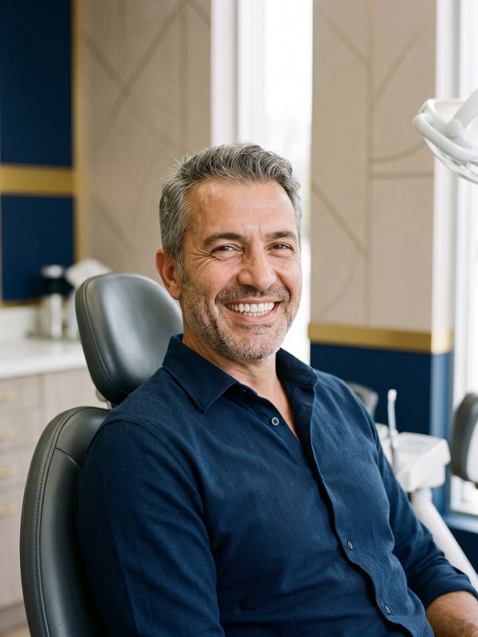

Avant de décider d'un traitement, tout le monde veut savoir la même chose : « Comment cela
va-t-il se passer pour moi ? » Les quatre parcours ci-dessous décrivent le déroulé typique des traitements
d'implant, de zircone, de facettes et de blanchiment dans notre clinique — du premier appel jusqu'à votre
contrôle final.
Information : ces récits sont illustratifs ; ils ne décrivent aucun patient précis
et ne constituent ni un avis de patient ni un témoignage d'expérience. Le déroulé et le résultat de chaque
traitement varient d'une personne à l'autre ; la décision se prend après un examen clinique.
Implant

Image illustrative
Un sourire à nouveau confortable : le parcours implant
TR : Yeniden Rahat Bir Gülüş: İmplant Yolculuğu
La plupart des personnes qui nous contactent pour un implant disent une variante de la même phrase :
« Je ne souris plus sur les photos. » Une dent manquante touche plus que la mastication — elle touche
aussi la confiance. Dès la première conversation, notre responsable de clinique Çiğdem vous explique le
parcours pas à pas, pour que votre examen se réserve sans le moindre point d'interrogation en tête.
À l'examen, notre dentiste fondateur Yasin étudie votre structure osseuse sur des clichés de tomographie
tridimensionnelle et trace un plan à votre mesure. Si le volume osseux suffit, nous passons directement à
la pose ; sinon, des options comme la greffe osseuse se discutent franchement — nous n'aimons pas les
surprises. L'implant se pose en général en une seule séance sous anesthésie locale ; la question que nous
entendons le plus souvent ensuite : « C'était vraiment tout ? »
La fusion de l'implant avec l'os prend en général quelques mois ; pendant ce temps, si vous en avez
besoin, une solution provisoire fait que vous ne restez jamais sans dent, et vos contrôles sont planifiés
et suivis par Çiğdem tout du long. Une fois la restauration définitive posée, l'objectif est clair :
croquer une pomme sans arrière-pensée, parler sans inquiétude et rire sans que la main ne vienne
instinctivement couvrir la bouche. Après cela, nous ne demandons qu'une chose : brossez l'implant comme
vos dents naturelles et ne sautez pas vos contrôles annuels.
Des dents qui ont viré de couleur au fil des ans, ou de vieilles couronnes usées, peuvent donner à tout
un sourire un air fatigué. Le parcours zircone commence par un examen avec Yasin : la façon dont les
couronnes s'assiéront contre votre ligne gingivale, leur translucidité, et une teinte et une forme
accordées à vos traits se planifient ensemble. Choisir la teinte n'est pas l'affaire de quelques secondes
au fauteuil ; l'accord avec vos dents voisines s'évalue à la lumière du jour, sous différents angles.
Les empreintes se prennent en numérique ; avec vos dents provisoires en place, la vie continue
normalement, sans pause. Les couronnes prêtes, vous passez un essayage — si un détail ne vous plaît pas,
il se corrige avant la pose finale, car à ce stade les changements restent toujours possibles. Le
parcours se termine en général en deux ou trois séances, Çiğdem coordonnant chaque rendez-vous du début à
la fin.
L'objectif n'est jamais ce rendu « visiblement fait » — c'est un renouvellement que personne d'autre ne
remarque, que vous seule connaissez.
Petite touche, grande différence : le parcours facettes
TR : Küçük Dokunuş, Büyük Fark: Lamine Yolculuğu
Quand les dents sont saines mais écartées, légèrement de travers ou simplement pas de la bonne forme,
les facettes sont souvent l'option qui donne le résultat le plus visible pour la plus petite
intervention. La partie du parcours que les gens préfèrent : Yasin prépare d'abord un essai de design
(un mock-up) sur vos dents — vous voyez donc le résultat dans le miroir avant même que le traitement ne
commence. Naturellement, tout démarre par un examen : s'il existe un souci de santé gingivale ou une
petite carie, cela se règle avant les facettes.
Une fois votre feu vert donné, seule une couche très fine se prépare à la surface de la dent, et vos
facettes se fabriquent spécialement pour vous. Le parcours se boucle en quelques séances, et Çiğdem en
planifie le calendrier avec vous, autour de vos obligations de travail et de déplacement.
Après la pose, les petites habitudes comme se ronger les ongles ou tenir un stylo entre les dents se
passent en revue une à une — la durée de vie de vos facettes en dépend aussi en partie. Au fond, le
secret d'une bonne facette n'est pas qu'elle se fasse remarquer — c'est que personne ne la remarque du
tout.
Un sourire rafraîchi en une seule séance : le parcours blanchiment
TR : Tek Seansta Tazelenme: Beyazlatma Yolculuğu
La marque que le café, le thé et le temps laissent sur la couleur de vos dents ne s'inverse pas toujours
au brossage régulier. À l'examen, nous évaluons d'abord la surface dentaire ; au besoin, un détartrage
précède le blanchiment — le résultat est plus homogène sur une surface propre. Le blanchiment au
fauteuil se termine à la clinique en une seule séance d'environ une heure, sous la supervision de
Yasin : les gencives se protègent d'abord, puis le gel de blanchiment s'applique de façon contrôlée.
Pour éviter la sensibilité, les conseils d'avant et d'après se planifient spécialement pour vous ; la
teinte que vous atteindrez dépendant de la couleur de départ de vos dents, fixer des attentes réalistes
nous importe autant que le résultat lui-même. Nous vous demandons de vous passer de café, de thé et
d'aliments ou boissons très colorés les 48 premières heures — un peu de patience fait durer le résultat.
Vous pouvez réserver votre rendez-vous avec Çiğdem en quelques minutes ; la plupart de nos hôtes passent
sur leur pause déjeuner et repartent directement au travail.
Information : les récits de parcours de cette page sont illustratifs ; ils ne décrivent
aucun patient précis et ne constituent ni un avis de patient ni un témoignage d'expérience. Les parcours et
résultats de traitement varient d'une personne à l'autre ; le diagnostic et la décision de traitement se
prennent après un examen clinique. Dernière mise à jour : 30 août 2026 · Contenu approuvé par : Dr Yasin [Nom].
📋 Export vers WordPress
Vous pouvez coller chaque récit sous sa page de traitement liée comme bloc
HTML personnalisé, ou utiliser le bloc « Page complète » pour publier une page unique
Parcours de traitement. L'avertissement de récit illustratif est déjà inclus dans chaque bloc —
ne le supprimez pas (requis pour la conformité réglementaire). Les photos sont dans le dossier
img/ (JPG 600×800) : téléversez-les dans la médiathèque WP et ajoutez-en une en tête de chaque
récit ; gardez aussi la légende « Image illustrative » dessous.
{kind=link}
{kind=link}
{kind=link}
{kind=link}
{kind=link}
{kind=link}
{kind=link}
{kind=link}